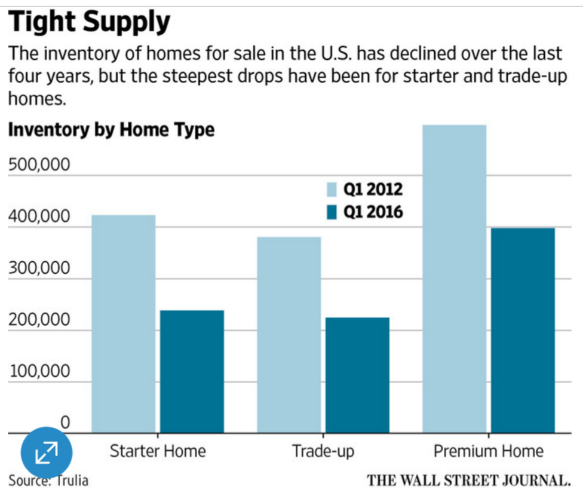
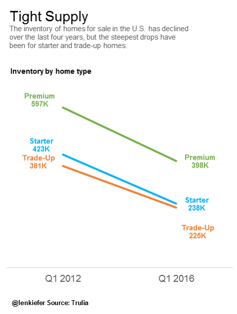
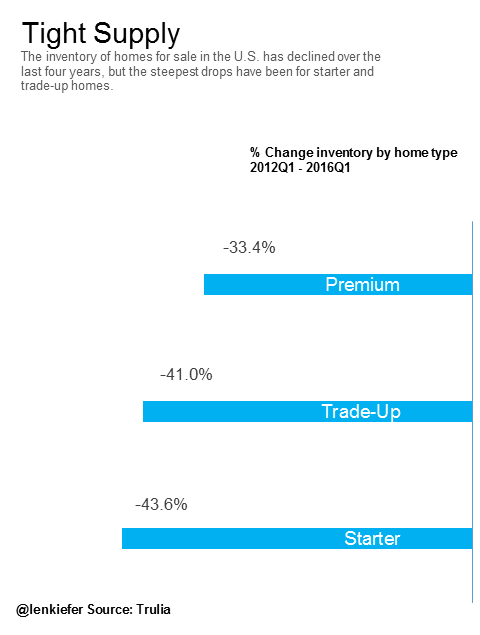
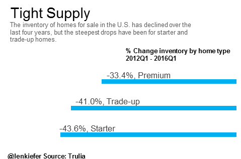
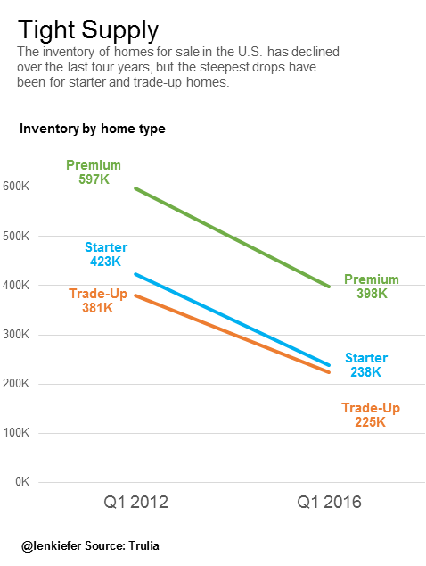

Tight Inventory
EARLIER THIS WEEK, Trulia published a post by Chief Economist Ralph McLaughlin called “House Arrest: How Low Inventory Is Slowing Home Buying”. The article analyzed trends in housing inventory.
Trulia broke housing inventory into “starter homes”, “move-up homes”, and “premium homes”. They found that the inventory of available homes for-sale has shifted towards premium homes and away from starter homes that first time homebuyers would typically be buying. We’re not here to talk housing inventory, but I recommend you take a look.
No, this post is about Data Viz. This Wall Street Journal article referencing the Trulia analysis included this workmanlike bar graph on housing inventory based on the Trulia data.

This prompted @storywithdata to post this question:
Doesn't seem like the right graph…perhaps not even the right data for point being made. What/how would you show? https://t.co/jkpU1jopvr
— Cole Nussbaumer (@storywithdata) March 21, 2016
Because I have been thinking a lot about housing inventory this week, this question resonated with me. I’ve recently put together a few alternative ways of looking at housing inventory data. Let’s set aside the question of whether or not the data is appropriate for the point being made. (I happen to think the data is the right data.)
In this post I want to focus on the point of the bar chart and consider what alternatives might look like. The data can be easily downloaded from Trulia, though in this case we are only talking about 6 numbers so I just typed them into a spreadsheet. For this exercise I just opted to use Excel, though with a different tool you might be able to get an even better result. I came up with two alternatives and one variation (link to excel workbook below.)
Alternative 1 Slopegraph
Since the focus of the article is the decline of inventory of homes, especially in the starter home category, a slopegraph immediately jumped to mind. The slopegraph lets us more easily compare the trends than the clustered bargraph:

The downside of this slopegraph is that it doesn’t seem to support the main point that starter homes are special. To me, the slopgraph seems to suggest that both premium and starter categories experienced similar declines. If you look back at the bar chart you’ll see that seems to be true with that graphic as well.
ALternative 2 Bar chart
The second alternative I considered was a bar chart. But instead of focusing on the absolute value of inventory (which probably only means something to housing geeks like myself) we focus on the percentage change from 2012 to 2016:

I think this chart tells the story better. We probably don’t need to know the absolute values of housing inventory and the percentage changes are pretty clearly illustrated with the bars. You also can compress this graph pretty small and still get the point quickly:

: download spreadsheet with charts
Gridlines
Not sure about how you feel about gridlines and a vertical axis, but here’s a version of the slopegraph with them:

{% include JB/setup